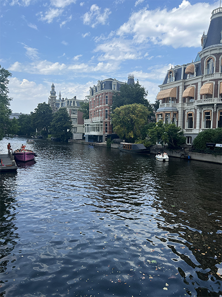
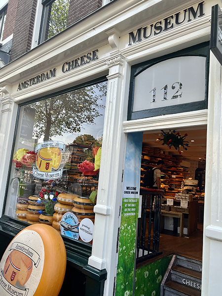
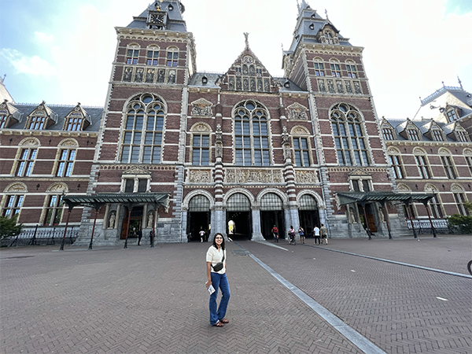
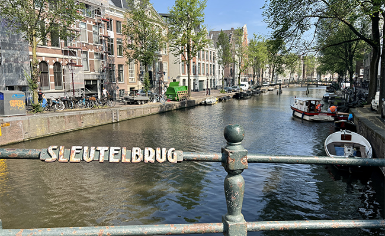
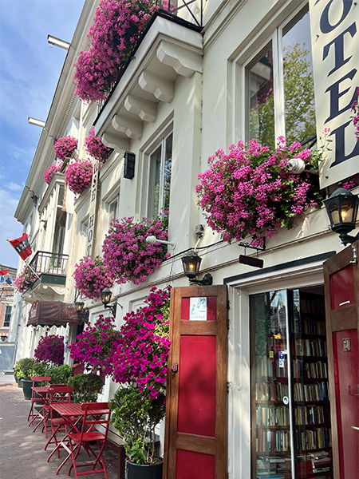
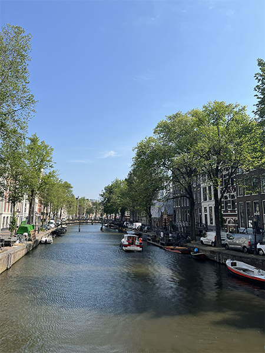

Amsterdam
Amsterdam is the capital city of the Netherlands and the city with the most populations. It boast a large number of canals that make for beautiful pictures. We only got to spend a full day in the city. We strolled the streets, ate great food, and visited a museum all while avoiding the bike riders.
Highlights
- Canal Cruise
- This was the best way to see the beautiful city. We rode the boat cruise at sunset and got to see the city in a different light. We enjoyed refreshments as we marveled at the architecture.
- Rijksmuseum
- A beautiful museum that is dedicated to the Dutch arts and history. The building itself is a work of art. We got to see paintings by notable artist such as Rembrandt and Vermeer.
- Royal Palace, Amsterdam
- The royal palace was built during the Dutch Golden Age. It was to be used as a city hall. It later became the palace of King Louis Napoleon. We did not visit the interior, but the exterior was just as magnificent.
- Amsterdam Cheese Museum
- Amsterdam is known for amazing cheese. We got to sample a variety of cheeses and look at the proccess of making cheese. It is a small, yet cute museum to visit.





